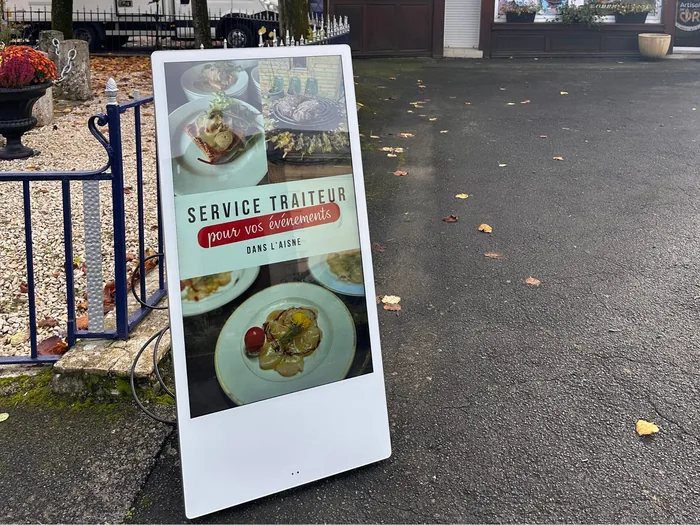

Écrans d'affichage pour camping et hôtellerie de plein air
Le département compte l'une des plus fortes densités de campings d'Europe, et Argelès-sur-Mer en est la première commune. Pourtant, la plupart des établissements informent encore leurs clients avec des feuilles A4 punaisées sur du liège.

Un camping n'a pas une vitrine, il a cinq points d'affichage
C'est ce qui distingue ce métier de tous les autres que nous équipons. Un commerçant a une devanture ; un camping a une réception, un snack, un bar, une piscine et souvent une épicerie, chacun avec ses horaires, ses tarifs et ses informations propres. Et tous ces points sont aujourd'hui gérés en papier, par des gens différents, à des rythmes différents.
Le résultat est toujours le même : à la réception, un panneau de liège correct au 1er juillet et périmé au 20 ; au snack, une carte plastifiée jaunie où deux prix ont été corrigés au marqueur ; à la piscine, une feuille scotchée sur la vitre que la pluie a fait gondoler. Ce n'est pas de la négligence, c'est mécanique : personne n'a le temps de réimprimer quoi que ce soit au cœur de la saison.
L'accueil : ce que le client cherche vraiment
Un vacancier qui arrive à la réception pose toujours les mêmes questions, et il les repose tous les jours de son séjour : qu'est-ce qu'il y a ce soir, à quelle heure ouvre la piscine, où est le marché demain, est-ce qu'il va faire beau.
Un écran à l'accueil répond à toutes avant qu'on les pose, et il se met à jour depuis un téléphone. C'est le premier gain, et il est très concret : moins de temps passé à répéter les mêmes réponses au comptoir, en pleine journée d'arrivées.
- Le programme d'animation du jour et du lendemain
- Les horaires de la piscine, du snack, de l'épicerie, de la laverie
- La météo et, quand il le faut, l'alerte tramontane ou l'état du drapeau de baignade
- Les marchés et manifestations des communes alentour
- Les services payants : location de vélos, navette, massages, laverie
L'affichage réglementaire — tarifs, règlement intérieur, consignes de sécurité de la piscine — reste sur son support fixe. L'écran ne le remplace pas, il prend en charge tout ce qui bouge.
Le snack et le bar : c'est là que l'écran se rembourse
Un camping de plusieurs centaines d'emplacements, c'est une restauration captive qui tourne le midi, le soir, et beaucoup à l'apéritif. Deux ou trois écrans alignés derrière le comptoir forment un menuboard complet, modifiable en dix secondes.
Les usages qui rapportent le plus sont toujours les mêmes : retirer un produit en rupture au lieu de le refuser trente fois, pousser la formule du soir pendant le service, annoncer la soirée pizza ou la paella du jeudi à partir de 11 h du matin, afficher la pression et le cocktail du moment à l'heure de l'apéritif. Sur une saison, ce sont des paniers moyens, pas des affiches.
Une clientèle renouvelée tous les quinze jours, et pas toujours francophone
C'est la particularité de l'hôtellerie de plein air : votre public change intégralement deux fois par mois. Personne n'a le temps d'apprendre le fonctionnement de l'établissement, et personne ne lit un panneau chargé.
La part de clientèle néerlandaise, allemande, britannique et espagnole rend en outre le texte français peu opérant. Un écran règle les deux problèmes d'un coup : des images plutôt que des paragraphes, et une boucle qui alterne deux ou trois langues sans encombrer l'affichage. Une fois la boucle construite en avril, elle tourne jusqu'en septembre.
Le vent, le sel et le plein soleil
Sur ce littoral, c'est la contrainte qui élimine la plupart des solutions. La tramontane interdit les supports légers, l'air marin attaque tout ce qui n'est pas prévu pour, et une réception vitrée plein sud reçoit une lumière qu'un téléviseur grand public ne suit pas — à 300 cd/m², il devient un miroir noir dès le milieu de matinée.
Le matériel professionnel est dimensionné pour : jusqu'à 4000 cd/m² et traitement antireflet pour les écrans exposés, étanchéité IP55 et une dizaine d'heures d'autonomie sur batterie pour l'écran mobile qu'on sort près de la piscine et qu'on rentre le soir, fonctionnement de −30 °C à +50 °C pour un panneau LED fixé en extérieur, à l'entrée ou près de la barrière.
Vos saisonniers changent, l'écran non
Un panneau d'affichage dépend entièrement de la personne qui accepte de s'en occuper. Chaque année, cette personne est nouvelle, elle arrive en juin et repart en septembre.
Un écran déplace le problème : le contenu se pilote depuis le téléphone du directeur ou du responsable animation, et la prise en main d'un saisonnier tient en un quart d'heure. Mieux, l'essentiel se programme à l'avance — le planning d'animation de toute la saison peut être saisi en mai et se dérouler tout seul jusqu'à la fermeture.
Le calendrier, et le budget
Tout se décide entre novembre et mars. Un établissement qui s'équipe en janvier a le temps de poser, de former son équipe et de construire ses contenus tranquillement, pour entrer en saison avec un outil maîtrisé. Passé le mois de mai, c'est perdu pour l'année en cours.
Côté budget, un écran intérieur démarre à 49 € HT par mois et un élément de menuboard 43 pouces à 59 €, sur 60 mois. Un écran haute luminosité pour une réception vitrée est à 139 €. Un panneau LED extérieur se chiffre sur devis, aux dimensions de l'emplacement.
Pour un site à plusieurs écrans, nous ne partons pas de la grille : nous venons voir les pôles à équiper et nous construisons une proposition d'ensemble. Le simulateur vous donne malgré tout l'ordre de grandeur par écran.
Ce que nous demandent les campings
Faut-il un écran par pôle, ou un seul suffit-il ?
Un seul écran à l'accueil règle déjà le problème du panneau d'affichage, mais il ne touche que les clients qui passent à la réception. Les établissements qui vont au bout en installent trois à cinq : accueil, snack ou restaurant, et bar ou piscine. Nous établissons la proposition site par site, après une visite.
Nos saisonniers changent tous les ans, est-ce un problème ?
C'est plutôt l'argument principal. Un panneau de liège dépend de la personne qui veut bien s'en occuper ; un écran se pilote depuis le téléphone du directeur ou du responsable animation, et la mise à jour prend dix secondes. La formation d'un nouveau saisonnier au logiciel tient en un quart d'heure.
Peut-on afficher en plusieurs langues ?
Oui, et c'est un usage courant ici vu la part de clientèle néerlandaise, allemande, britannique et espagnole. Le même message passe en boucle dans deux ou trois langues, ou chaque langue a son créneau dans la journée. Rien à faire une fois la boucle construite.
Quand faut-il s'y prendre ?
Entre novembre et mars. Une installation décidée en juin arrive trop tard pour être utile la même saison : il faut le temps de poser, de former l'équipe et surtout de construire les contenus. Une visite commerciale en juillet ne sert à rien et nous ne la tentons pas.
À voir aussi
Les communes où se concentre l'hôtellerie de plein air, et le métier le plus proche.
Parlons-en pendant l'hiver, pas en juillet
Une saison se prépare six mois avant. Nous nous déplaçons sur site pour étudier les emplacements, gratuitement.
Demandez votre étude gratuite
Dites-nous le nombre d'emplacements, les pôles à équiper — accueil, snack, bar, piscine — et votre période d'ouverture. Pour un site à plusieurs écrans, nous construisons une proposition sur mesure.
- Réponse sous 48 heures
- Nous venons voir votre devanture sur place
- Simulation de votre vitrine, sans engagement